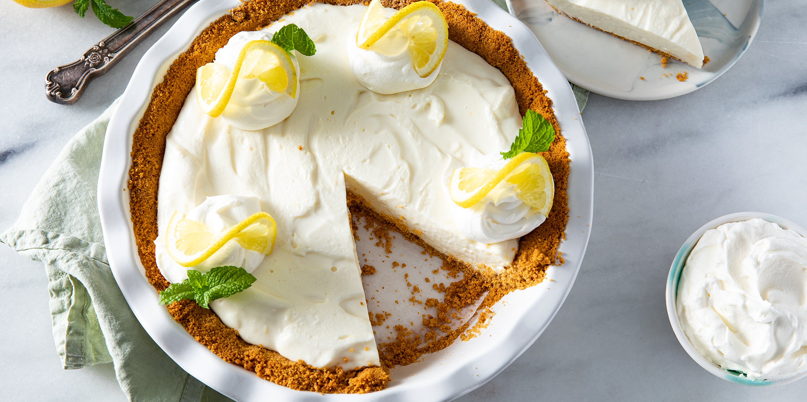

Lemon Icebox Pie Recipe

A family favourite when a no-bake, fast pie is needed.
Ingredients
- 1 x (9 inch) prepared graham cracker crust
- 2 x (8 ounce) packages cream cheese, softened
- 1 x (14 ounce) can sweetened condensed milk
- 2 x lemons, juiced
- 1 x teaspoon lemon zest
Steps
- In a medium mixing bowl, beat cream cheese until fluffy.
- Add condensed milk, lemon juice, and lemon rind.
- Mix until smooth. Pour mixture into crust.
- Refrigerate at least 2 hours before serving.
- Garnish with whipped cream and mint leaves if desired.
Odin Recipes